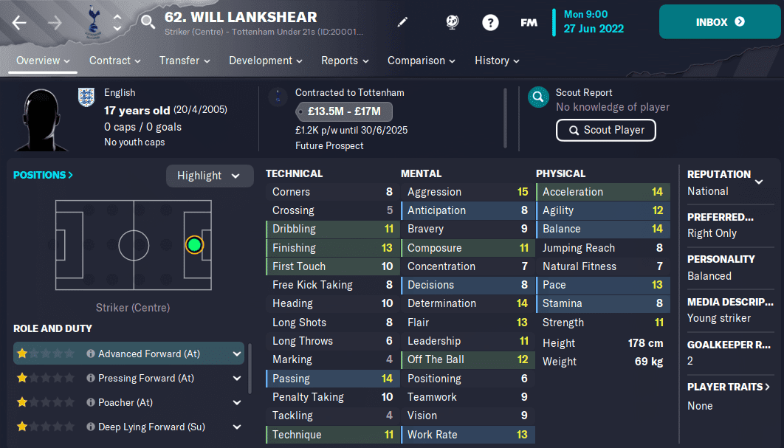
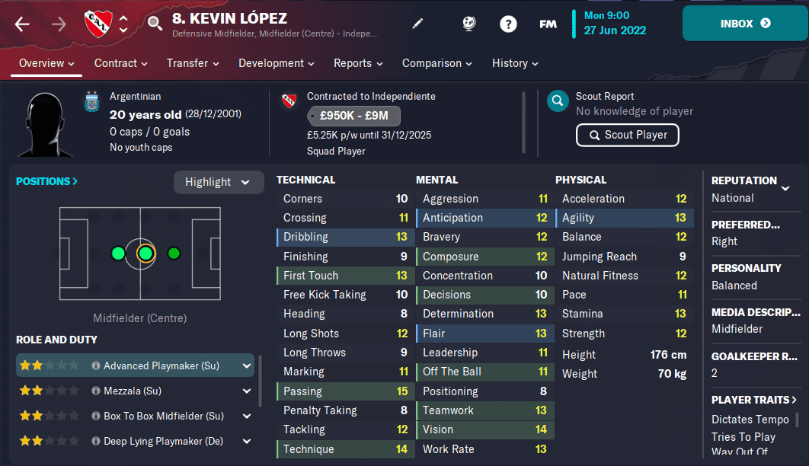
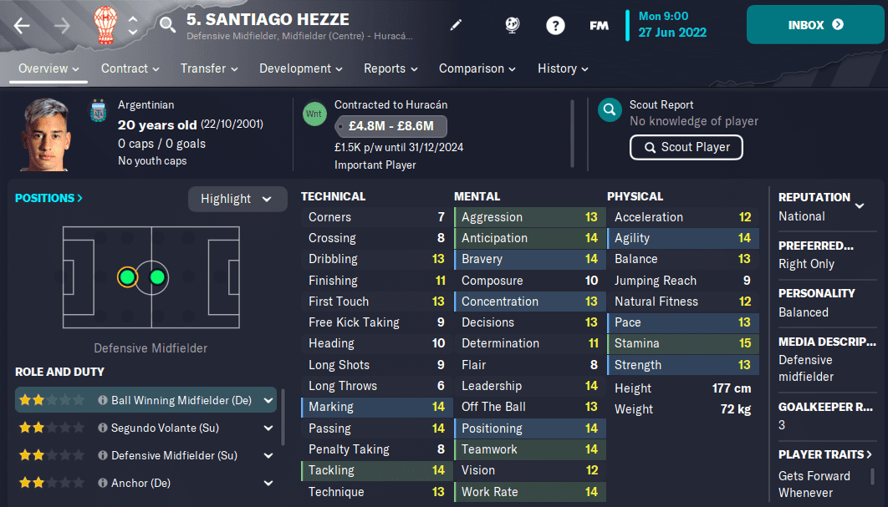
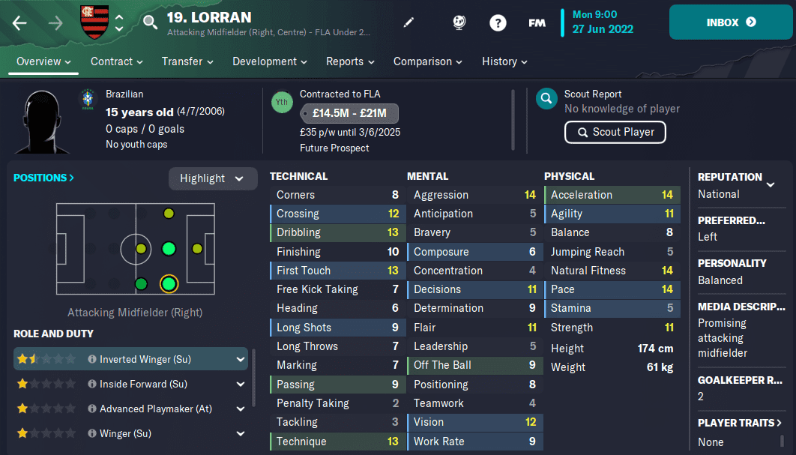
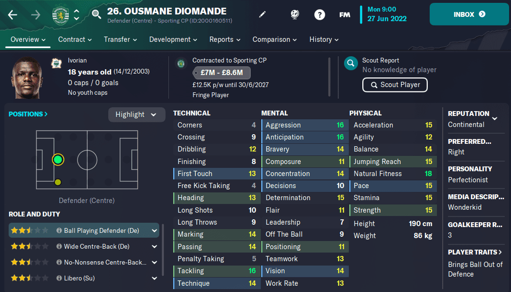
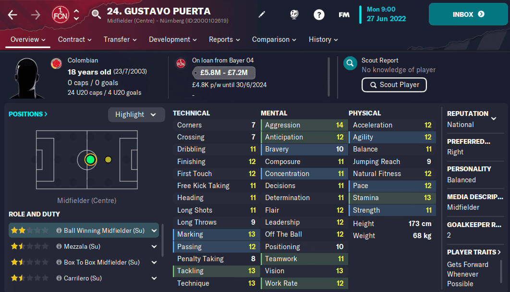
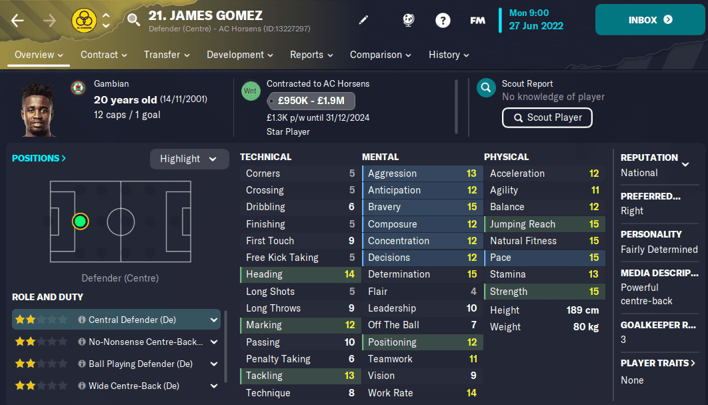

WINTER UPDATE'S TOP FOOTBALL MANAGER 2023 WONDERKIDS
Get ready to elevate your Football Manager 2023 experience to the next level with the winter update's new Wonderkids! These young players have the potential to become the biggest stars of the game, and in this article, we'll explore some of the best new additions to the Wonderkids list. From promising strikers to technically gifted midfielders and dominant center-backs, we've got you covered with all the details on these young players' skills and potential. Whether you're looking for a high-value investment or a great bargain option, these Wonderkids are definitely worth scouting and signing for your team.
Will Lankshear
Tottenham has no shortage of promising young strikers, and Will Lankshear is the latest to make the FM23 Wonderkids list. At 140 to 170 potential ability, he has a great base set of skills, including speed, balance, and good off-the-ball work. He also has good finishing skills and composure abilities, which make him a reliable goal scorer.
Kevin Lopez
With good technical, mental, and physical attributes, Kevin Lopez is a promising young midfielder from Argentina. His potential ability is fixed at 150, and he already has a high current ability, making him a great choice for any team.
Santiago Hezze
Santiago Hezze is a well-rounded defensive midfielder with great attributes in tackling, passing, and decision-making. Playing for Huracan in the Argentine Premier Division, he is an important player for his team. With a potential range of 150 to 159, he has plenty of room to grow.
Lorran
At just 15 years old, Lauren is a brand new addition to the FM database. Playing for Flamengo in Brazil, he is already part of their under-20 side. His strong left foot makes him a great choice for the right wing, and he has good acceleration, dribbling, and passing skills. With a potential range of 140 to 170, he has a lot of room to grow.
Thomi Montefiori

Tottenham has no shortage of promising young strikers, and Will Lankshear is the latest to make the FM23 Wonderkids list. At 140 to 170 potential ability, he has a great base set of skills, including speed, balance, and good off-the-ball work. He also has good finishing skills and composure abilities, which make him a reliable goal scorer.
Ousmane Diomande
The player everyone is talking about from the winter update is Ousmane Diomande. This center-back has had a massive increase in his potential, making him one of the best in the game. He has great attributes in all areas, making him an exceptional player from the outset. However, his transfer valuation is high, so you'll need to spend big to acquire him.
Gustavo Puerta
At just 18 years old, Gustavo Puerta is already part of Colombia's under-20 side. Playing for Bayer Leverkusen on loan at Nurnberg, he is a technically gifted passer with good acceleration and agility. With a potential range of 140 to 170, he has plenty of time to develop his skills.
James Gomez
Playing for AC Horsens in the Danish 3F Superliga, James Gomez is a physically dominant center-back with good speed and determination. With a transfer valuation of around 2 million pounds, he is a great bargain option. His potential range is fixed at 150, so you know exactly what you're getting with him in every save.